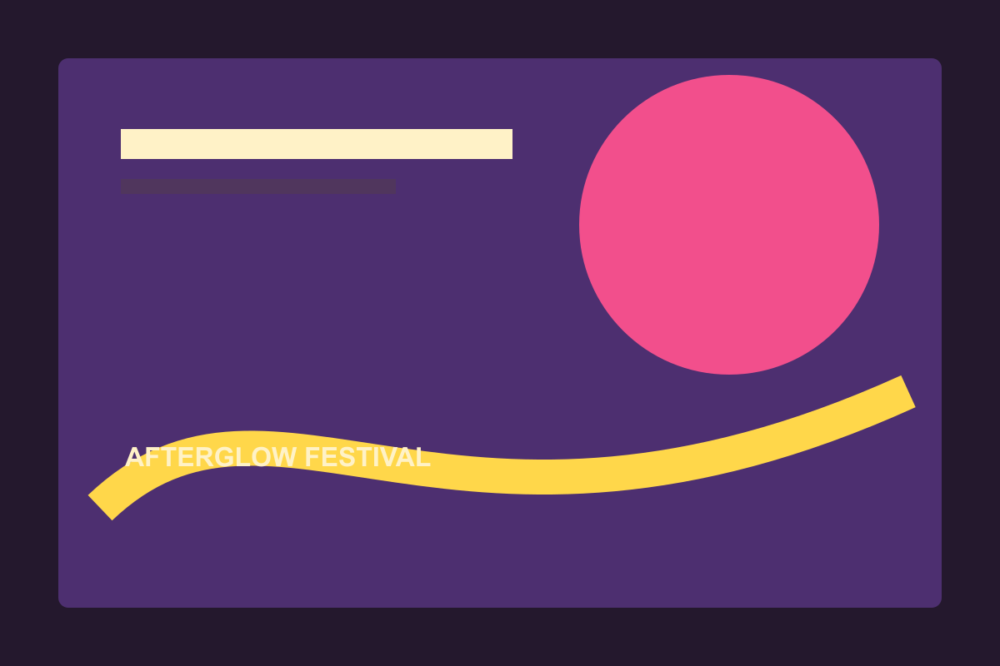

Tonight's constellation
Move through headliners, discoveries, and late sets as one constellation.
ExploreLive music, moving light, and a field full of people who came to feel something.

Move through headliners, discoveries, and late sets as one constellation.
ExploreBuild a personal schedule without losing the accidental encounter.
ExploreFind transport, access, camping, food, and quiet-space details.
Explore